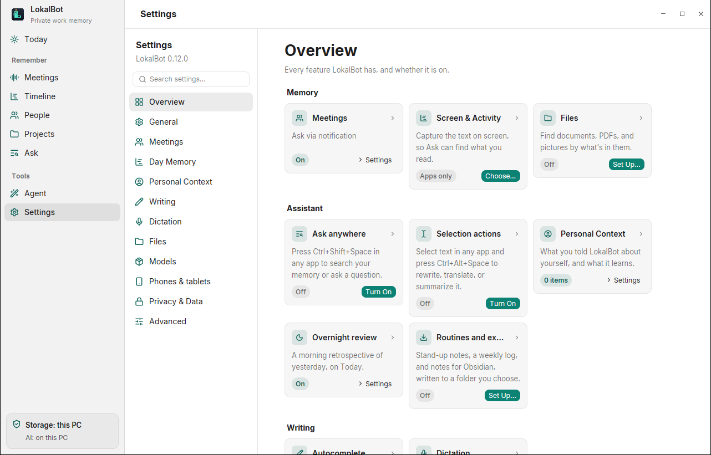
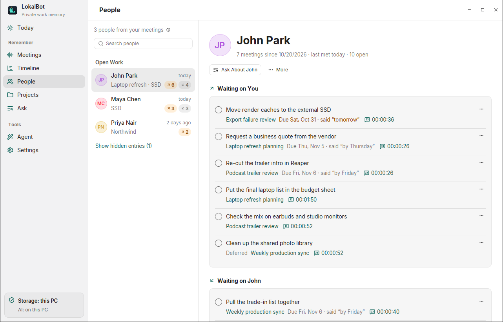

The Windows and Linux app gains nearly everything the Mac has had: search across your files, a daily review, selection actions, People and Projects, and more. Your library still moves between all three.

Files: search the folders you choose by what's in them. Screens by meaning, and screen text in more scripts. Coding-agent sessions from Claude Code and Codex, once you opt in.
Overnight review of yesterday on Today. People, Projects and Actions gather what's open from your meetings. Personal Context holds what you told LokalBot and what it learns.
Selection actions rewrite, translate or summarize selected text. Spoken summaries, routines and exports to a folder or Obsidian, and agent handoff for actions.
Ctrl+K opens the command palette. Ctrl+Shift+Space asks from any app, and Ctrl+Alt+Space acts on a selection. Both shortcuts are off until you turn them on.
A computer can now host paired phones and tablets, in Settings → Phones & tablets, over your local network or Tailscale. The apps aren't in the App Store or Play Store yet, so there's nothing to pair for now.
Suggestions in other apps on Sway, Hyprland and GNOME, as an input method. It has its own guide.
Files, screen text and reviews are read and indexed here, in your library. Screen text in other scripts uses Tesseract on Linux and Windows' own recognizer on Windows. Tesseract's language data is a separate download, once.
The overnight review waits for mains power and uses a remote Think model only at a server you approved. A phone's Ask gets no personal context, work memory or files.
http:// to any server that isn't this computer, including ones on your network or Tailscale. Move those to HTTPS.
.doc, RAW photos, or scans stored as JBIG2, CCITT or JPEG 2000. Video frames, HEIC and AVIF need ffmpeg.